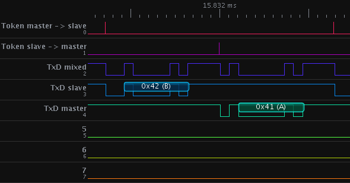

RingLock
How it started
After reading about PIClock4
a inter-microcontroller mutex on dangerousprototypes.com,
I got curious about the actual implementation.
It uses shift registers to pass a token in form of just a single bit around.
Once the token arrives at a mcu that needs access to the resource, the mcu can stop the shifting.
After having done whatever it needs the resource for, it can start the shifting again.
Unfortunately the schematic files were down, so I had to ask for them.
The marker of piclock told me that his project was just for fun and never intended for actual usage.
Because of the huge amount of logic chips needed he suggested rather using a arduino/atmega328 to emulate the hardware in software.
That's what got me thinking initially.
Using a 32k flash mcu to emulate 9 logic ics, sounded terribly wasteful to me.
First idea : I could use a Attiny instead.
Advantages : I would not waste that much flash space.
Disadvantage : Attinys have only few IO-pins and therefore the amount of mcus that can be attached to the lock is limited.
So I was looking for a solution that allows a huge number of mcus, while needing no/not much additional hardware.
At some point I got reminded of token ring networks, something I've never seen myself,
because it's a rather old technique and at least for computer networks totally replaced by Ethernet.
It's basic ideas is that the hosts pass a token from one to the next in a ring like topology.
Once a host gets a token he is allowed to attach data to it while passing it on.
This is very similar to the bit that gets shifted around in the piclock system,
but it does not require a central piece of hardware controlling the whole process.
That sounded just like the thing I wanted.
After googling for a while I found a few implementations for token passing on microcontrollers,
but the majority of them were integrated in other projects and designed for a single usage scenario.
At that point I started experimenting with an own implementation.
It had easily configurable for different AVR mcus and applicable to various scenarios where multiple mcus access the same resource.
It's important to notice that I don't claim this to be a full featured library.
Let's be honest, there not even enough lines of code to call this a program.
I rather wanted to present the idea behind it, as well as providing a little reference implementation.
So just think of this as a request for comments.
How it works
The basic idea is to implement a decentralized token passing mechanism,
allowing multiple mcus to share access to a resource like some kind of memory, a sensor or a communication interface of some kind.
Each mcu has one of its IO Pins connected to the external interrupt pin e.g. INT0 of the next mcu.
The last mcu in this chain has one of its IOs connected to the interrupt pin of the first one.
This results in a ring topology as shown below.
When everything is powered up somebody has to have the token and the access initially.
I called this special mcu master.
It does whatever it needs to do with the resource and then pulls his IO-pin (called PYX in the drawing) high for 1us.
Slave 1 will get interrupted because of the rising signal at his INT0.
In his ISR he will check whether the rest of his program has requested access to the resource.
This is done by simply checking a flag. If the flag is not set it will pass the token to slave 2 immediately in his ISR.
Otherwise it will set a flag, signalling the program that it can now access the resource and leave the ISR.
It's now up to the program to work with the shared resource for a while and to pass on the token.
The next mcus will do exactly the same thing and the token will circulate in the ring infinitely.
At least theory.
In praxis you'll sooner or later lose the token, simply because of murphys law.
Imagine a mcu crashes, there is a power failure or a bad connection.
Having lost the token, the system will get stuck since no one is allowed to access the shared resource.
Every mcu waits for the token, that will never arrive.
That's the point where a time out might come handy.
Using a timer of the master mcu it's easy to implement one.
The timer gets reset every time the master gets the token back from the last mcu in the ring.
If the token doesn't arrive in time, the master assumes that it was lost and pretends to have the token.
The new token will be passed on and everything is hopefully working again.
Still there is one pitfall in this approach, the timeout has to be chosen carefully.
If the master sends a new token while another is still on the ring, to mcu will try to work with the resource,
which is in fact the situation we are trying to avoid using lock.
The best idea is to use a timeout that is at least 1,5 times as long, as the longest time a token need back to the master.
How to use it
There are two ways of getting the source code :
- Get the tarball here
- Clone the hg repository: hg clone hg repo url here
Once you got the source, you'll want to adjust the configuration in include/ringlock.h.
The config is documented there and changing it should be pretty straight forward.
Using the makefile is a bit more complex then the usual make all.
There are some variables that need to be set :
- LOCKROLE sets role of the mcu in the ring. Can be master or slave.
- AVRMCU sets the mcu. Can be atmega8 or atmega32. If you want an other mcu add it in include/ringlock.h.
- F_CPU set the frequency of the mcu in Hz.
So if you want to build a slave for an Atmega8 with 8mHz call make ROLE=slave AVRMCU=atmega8 F_CPU=8000000 all.
Currently the source only supports Atmega32 as master or slave and Atmega8 as slave.
This can be changed by extending the configs in include/ringlock.h.
Once you have added a new mcu, it would be nice to send me patch so I can add it to the source.
Using the ringlock in your source code is simple, it boils down to 4 functions :
- rl_init() sets up timers and ports
- rl_request_lock() tells the ISR to keep the token
- rl_have_lock() retuns 1 if the mcu has the lock, else 0
- rl_release_lock() releases the lock again
Example
Since this was a solution to which I didn't have a Problem I made one up :
One ATmega32 (Master) and one Atmega8 (Slave) share the TXD line of a RS232 connection.
I used the OpenBench LogicSniffer to measure the signals.
The and gate was in a HCF4081.
If you set the TXD of the passive mcu to high-Z you won't need it, but I wanted the unmixed signals as well.
The program used in this test is bundled with the sourcecode as main.c.
Here are all the signals in the jawis OLS client:

and a photo of my setup :
So that's all so far.
Have fun with this stuff and please don't waste an entire Atmega32 on locks.